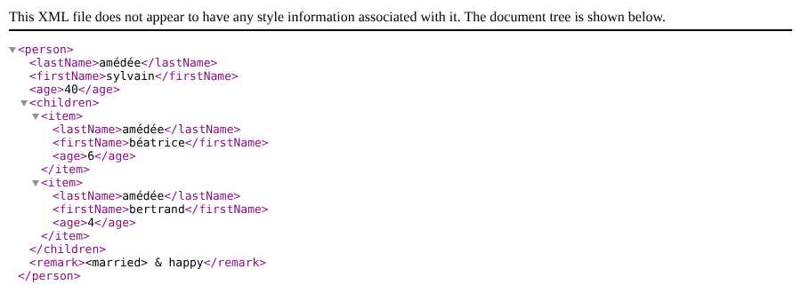
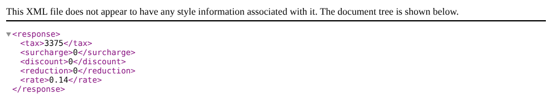

22. Exercício prático – Versão 11
Ainda é comum que serviços web enviem sua resposta na forma de um documento XML em vez de um documento JSON:
- o documento JSON é menor, mas é preciso de instruções para entendê-lo;
- o documento XML é mais verboso, mas é autodocumentado. É imediatamente compreensível.
Vamos modificar a aplicação cliente/servidor da versão 10 para que o servidor agora envie um documento XML como resposta a seus clientes. Com isso, colocamos em prática o capítulo anterior.
22.1. O servidor

Esta arquitetura será implementada pelos seguintes arquivos:
| scripts-web/tax/version-11
├── Data
│ ├── .htaccess
│ ├── config-server.json
│ └── logs.txt
├── Utilities
│ ├── XmlUtilities.php
│ └── testXml.php
└── tax-server.php
|
22.1.1. A classe [XmlUtilities]
O curso de PHP 7 adicionava um método, [getXmlForArrayOfAttributes], à classe [Utilities] que gerava o documento XML a partir de um array. Nosso servidor já usa a classe [Utilities] da versão 5 (para a classe [Database]): criamos uma nova classe [XmlUtilities]:
| <?php
declare(strict_types=1);
// namespace
namespace Application;
// funções utilitárias para o formato XML: a classe não pode ser instanciada nem derivada
final class XmlUtilities
{
// construtor privado: a classe não pode ser instanciada
private function __construct()
{
}
// retorna o documento XML de um array [$data]: o elemento raiz se chama [$root]
// as chaves do array tornam-se nomes de elementos, os valores, seu conteúdo
public static function arrayToXml(array $data, string $root): string
{
// um documento XML vazio (nova API DOM do PHP 8.4)
$document = \Dom\XMLDocument::createEmpty();
// o documento será indentado
$document->formatOutput = true;
// o elemento raiz e seus descendentes
$document->append(self::element($document, $root, $data));
// o texto XML do documento
return $document->saveXml();
}
// retorna o elemento XML [<$name>$value</$name>]
private static function element(\Dom\XMLDocument $document, string $name, mixed $value): \Dom\Element
{
$element = $document->createElement($name);
if (is_array($value)) {
// um array: cada elemento do array torna-se um elemento filho (chamada recursiva)
foreach ($value as $key => $subValue) {
// os elementos de uma lista (chaves 0, 1, 2...) são chamados [item]
$element->append(self::element($document, is_int($key) ? "item" : $key, $subValue));
}
} else {
// um valor simples torna-se o texto do elemento (os caracteres <, >, & são codificados pelo DOM)
$element->textContent = match (true) {
is_bool($value) => $value ? "true" : "false",
default => (string) $value,
};
}
return $element;
}
}
|
Comentários
- linha 9: Como a classe [Utilities] da versão 5, esta classe tem apenas métodos estáticos. Ela é [final] e seu construtor é privado: não pode ser estendida nem instanciada;
- linha 18: O método estático [arrayToXml] retorna o documento XML a partir do array [$data] passado como parâmetro. O segundo parâmetro é o nome do elemento raiz do documento;
- linha 21: Usamos a nova API DOM do PHP 8.4, apresentada no capítulo anterior. O método estático [createEmpty] cria um documento XML vazio. O script do PHP 7 usava o [SimpleXML], que também pode gerar um documento, mas não tão bem: era preciso codificar você mesmo os caracteres especiais do texto com a função [htmlspecialchars];
- linha 23: o documento resultante será indentado, o que o torna mais legível;
- linha 25: o elemento raiz do documento, criado pelo método [element], é adicionado ao documento;
- linha 27: o método [saveXml] gera o texto XML do documento;
- linha 31: o método privado [element] retorna o elemento XML com o nome [$name], representando o valor [$value];
- linha 33: o método [createElement] do documento cria o elemento;
- Linhas 34–38: Se o valor for um array, cada um de seus elementos se torna um elemento filho, criado por uma chamada recursiva ao método [element]. As chaves do array se tornam os nomes dos elementos filhos. As chaves de uma lista são os inteiros 0, 1, 2..., que não podem ser nomes de elementos XML: esses elementos são, portanto, chamados de [item]. O script do PHP 7 os chamava de [i0], [i1], [i2]...;
- linhas 40–45: caso contrário, o valor se torna o texto do elemento, atribuído à sua propriedade [textContent]. Os caracteres [<], [>], e [&] no texto são codificados pelo DOM ([<], [>], [&]). Os booleanos são escritos como [true] e [false]; os demais valores são convertidos em strings. A expressão [match (true)] seleciona o primeiro ramo cuja condição é verdadeira.
Escrevemos o seguinte script de teste, [testXml.php]:
| <?php
// conformidade estrita com os tipos declarados dos parâmetros e resultados das funções
declare(strict_types=1);
// dependência
require_once __DIR__ . "/XmlUtilities.php";
use Application\XmlUtilities;
// um array associativo
$array = [
"lastName" => "amédée",
"firstName" => "sylvain",
"age" => 40,
"children" => [
["lastName" => "amédée", "firstName" => "béatrice", "age" => 6],
["lastName" => "amédée", "firstName" => "bertrand", "age" => 4],
],
"remark" => "<married> & happy",
];
// a resposta é um documento XML
header("Content-Type: application/xml; charset=utf-8");
print XmlUtilities::arrayToXml($array, "person");
|
- linhas 12–21: um array associativo contendo uma lista e um texto com caracteres especiais do XML;
- linha 23: a função [header] define o cabeçalho HTTP [Content-Type] da resposta: trata-se de um documento XML;
- linha 24: o documento XML do array, com elemento raiz [person], é enviado ao cliente.
Vamos solicitar a URL [http://localhost/php8-oct-2026/scripts-web/tax/version-11/Utilities/testXml.php] com o [curl]:
| > curl http://localhost/php8-oct-2026/scripts-web/tax/version-11/Utilities/testXml.php
<?xml version="1.0" encoding="UTF-8"?>
<person>
<lastName>amédée</lastName>
<firstName>sylvain</firstName>
<age>40</age>
<children>
<item>
<lastName>amédée</lastName>
<firstName>béatrice</firstName>
<age>6</age>
</item>
<item>
<lastName>amédée</lastName>
<firstName>bertrand</firstName>
<age>4</age>
</item>
</children>
<remark><married> & happy</remark>
</person>
|
- linhas 7–18: a lista [children] e seus dois elementos [item];
- linha 19: os caracteres [<], [>], e [&] foram codificados.
Um navegador exibe o mesmo documento em forma de árvore:

Observe que o [Chrome] decodificou o texto do elemento [remark].
22.1.2. O script do lado do servidor
O script do lado do servidor [tax-server.php] deve ser modificado, assim como seu arquivo de configuração [config-server.json]:
| {
"databaseFilename": "../version-08/Data/database-mysql.json",
"dependencies": [
"../../../scripts-console/tax/version-05/Entities/TaxException.php",
"../../../scripts-console/tax/version-05/Entities/TaxAdminData.php",
"../../../scripts-console/tax/version-05/Entities/Database.php",
"../../../scripts-console/tax/version-05/Utilities/Utilities.php",
"../version-08/Dao/InterfaceServerDao.php",
"../version-08/Dao/ServerDao.php",
"../version-09/Dao/ServerDaoWithSession.php",
"../version-08/Business/InterfaceServerBusiness.php",
"../version-08/Business/ServerBusiness.php",
"../version-09/Utilities/Logger.php",
"../version-09/Utilities/SendAdminMail.php",
"Utilities/XmlUtilities.php"
],
|
- Linha 15: Inclua a nova classe [XmlUtilities]. O restante da configuração é igual ao da versão 10.
As mudanças no script do servidor são as seguintes:
| }
// envio da resposta HTTP ao cliente
// $result: o array a enviar, na forma do documento XML <response>...</response>
// $statusCode: o status HTTP da resposta
// $headers: cabeçalhos HTTP a adicionar à resposta
// $logger: o log da aplicação (null se não pôde ser criado)
// $redis: o cliente Redis (null se ainda não foi criado)
function sendResponse(
array $result,
int $statusCode,
array $headers = [],
?Logger $logger = null,
?RedisClient $redis = null
): void {
// a resposta XML
$response = new Response(XmlUtilities::arrayToXml($result, "response"), $statusCode, $headers);
$response->headers->set("Content-Type", "application/xml; charset=utf-8");
// envio
$response->send();
// log em JSON, mais conciso que XML
$logger?->write(json_encode(
["response" => $result],
JSON_UNESCAPED_UNICODE | JSON_UNESCAPED_SLASHES | JSON_PRESERVE_ZERO_FRACTION
));
// fechamento da conexão com o servidor Redis
$redis?->disconnect();
}
|
Comentários
- A classe [JsonResponse] não é mais usada: a resposta é uma simples resposta [Response];
- Linha 212: A resposta do servidor agora é o documento XML, com elemento raiz [response] a partir do array [$result];
- linha 213: indica-se que a resposta é um documento do tipo XML codificado em UTF-8;
- linhas 217–220: a resposta é registrada em log como JSON, que é mais conciso que o XML.
O restante do script permanece inalterado. Como todas as respostas passam pela função [sendResponse], basta modificar essa função para garantir que todas as respostas—inclusive as de erro—sejam documentos XML.
Teste
Vamos solicitar a URL [http://localhost/php8-oct-2026/scripts-web/tax/version-11/tax-server.php?married=yes&children=2&salary=60000], e com o [curl]:
| > curl -i -u admin:admin "http://localhost/php8-oct-2026/scripts-web/tax/version-11/tax-server.php?married=yes&children=2&salary=60000"
HTTP/1.0 200 OK
Date: Fri, 02 Oct 2026 12:29:50 GMT
Server: Apache/2.4.58 (Ubuntu)
X-Powered-By: PHP/8.5.11
Cache-Control: max-age=0, private, must-revalidate
Set-Cookie: PHPSESSID=cdcb082d1342f5b0a273f76a30f92fc6; path=/
Cache-Control: no-cache, private
Vary: Accept-Encoding
Connection: close
Content-Type: application/xml; charset=utf-8
<?xml version="1.0" encoding="UTF-8"?>
<response>
<tax>3375</tax>
<surcharge>0</surcharge>
<discount>0</discount>
<reduction>0</reduction>
<rate>0.14</rate>
</response>
|
- linha 7: o cookie de sessão enviado pelo servidor na primeira requisição;
- linha 11: o tipo de documento enviado;
- Linhas 13–20: O documento XML da resposta.
Em um navegador, após a autenticação, obtém-se o seguinte resultado:

As respostas de erro também são documentos XML. Uma requisição com parâmetros incorretos:
| > curl -u admin:admin "http://localhost/php8-oct-2026/scripts-web/tax/version-11/tax-server.php?married=x&children=2"
<?xml version="1.0" encoding="UTF-8"?>
<response>
<errors>
<item>GET method required with only the parameters [married, children, salary]</item>
<item>invalid married parameter [x]</item>
<item>missing salary parameter</item>
</errors>
</response>
|
Uma requisição de um usuário desconhecido:
| > curl -u x:x "http://localhost/php8-oct-2026/scripts-web/tax/version-11/tax-server.php"
<?xml version="1.0" encoding="UTF-8"?>
<response>
<error>Authentication failed [x]</error>
</response>
|
22.2. O cliente
Vamos agora nos concentrar no lado cliente da aplicação.

Esta arquitetura será implementada pelos seguintes arquivos:
| scripts-console/tax/version-11
├── Dao
│ └── ClientDao.php
├── Data
│ ├── config-client-ko.json
│ ├── config-client.json
│ ├── errors.json
│ ├── results.json
│ └── taxpayersdata.json
├── Main
│ └── MainTaxClient.php
└── Tests
└── ClientBusinessTest.php
|
Na nova versão, as únicas mudanças são:
- o arquivo de configuração [config-client.json];
- a camada [dao] do cliente.
O arquivo de configuração [config-client.json] passa a ser o seguinte:
| {
"urlServer": "http://localhost/php8-oct-2026/scripts-web/tax/version-11/tax-server.php",
"user": {
"login": "admin",
"passwd": "admin"
},
"httpClientOptions": {
"verify_peer": false,
"verify_host": false
},
"taxPayersDataFilename": "Data/taxpayersdata.json",
"resultsFilename": "Data/results.json",
"errorsFilename": "Data/errors.json",
"dependencies": [
"../version-05/Entities/TaxException.php",
"../version-05/Entities/TaxPayerData.php",
"../version-05/Utilities/Utilities.php",
"../version-05/Dao/TraitDao.php",
"../version-08/Dao/InterfaceClientDao.php",
"Dao/ClientDao.php",
"../version-08/Business/InterfaceClientBusiness.php",
"../version-08/Business/ClientBusiness.php"
]
}
|
- linha 2: a URL do servidor da versão 11;
- linha 20: a nova camada [dao] do cliente.
22.2.1. A camada [dao]
A classe [ClientDao] da versão 9 é modificada para levar em conta o novo formato de resposta. O [SimpleXML] é usado para processar essa resposta:
| try {
// fazemos a requisição ao servidor
$response = $this->httpClient->request("GET", $this->urlServer, $options);
// o status, os cabeçalhos e o documento XML da resposta, mesmo em caso de erro (parâmetro false)
$statusCode = $response->getStatusCode();
$headers = $response->getHeaders(false);
$content = $response->getContent(false);
} catch (ExceptionInterface $ex) {
// não foi possível alcançar o servidor
throw new TaxException("Error communicating with the server ({$ex->getMessage()})", 40, $ex);
}
// logs
// print "$content\n";
// o servidor envia o documento XML <response>...</response>
// as opções LIBXML_NOERROR e LIBXML_NOWARNING evitam avisos do PHP se o XML for inválido
$xml = simplexml_load_string($content, options: LIBXML_NOERROR | LIBXML_NOWARNING);
if ($xml === false || $xml->getName() !== "response") {
throw new TaxException("Invalid server response [$content]", 41);
}
// erro?
if ($statusCode !== 200) {
// lançamos uma exceção cuja mensagem é a resposta do servidor, convertida em JSON (mais conciso),
// completada com seu status HTTP
$serverResponse = json_decode(json_encode($xml, JSON_THROW_ON_ERROR), true, flags: JSON_THROW_ON_ERROR);
$message = json_encode(
["HTTP status" => $statusCode] + $serverResponse,
JSON_UNESCAPED_UNICODE | JSON_UNESCAPED_SLASHES | JSON_THROW_ON_ERROR
);
throw new TaxException($message, 42);
}
// recuperamos o cookie de sessão se ainda não for conhecido
if ($this->sessionCookie === null) {
foreach ($headers["set-cookie"] ?? [] as $cookie) {
if (preg_match('/^PHPSESSID=(.+?);/', $cookie, $fields) === 1) {
$this->sessionCookie = "PHPSESSID=$fields[1]";
}
}
}
// retornamos a resposta: o array [tax, surcharge, discount, reduction, rate]
// no documento XML, todos os valores são textos: nós os convertemos em seu tipo
return [
"tax" => (int) $xml->tax,
"surcharge" => (int) $xml->surcharge,
"discount" => (int) $xml->discount,
"reduction" => (int) $xml->reduction,
"rate" => (float) $xml->rate,
];
}
}
|
Comentários
- linha 63: A resposta do servidor é lida. É um documento XML [<response>…</response>];
- linha 72: a função [simplexml_load_string] analisa o documento XML recebido e retorna um objeto [SimpleXMLElement] que representa seu elemento raiz, ou [false] se o documento não for um documento XML válido. Por padrão, a biblioteca [libxml] usada pelo [SimpleXML] também relata os erros do documento como avisos do PHP: as opções [LIBXML_NOERROR] e [LIBXML_NOWARNING] os suprimem. Elas são passadas pelo argumento nomeado [options], o que evita escrever o parâmetro [class_name] que o precede na assinatura da função;
- linha 73: o método [getName] retorna o nome do elemento raiz, que deve ser [response];
- Linhas 77–85: Em caso de erro, a mensagem da exceção será a string JSON da resposta do servidor, e não a string XML recebida, porque a string JSON é mais concisa. Para obter o array associativo da resposta XML, usamos um truque clássico: a função [json_encode] pode converter um objeto [SimpleXMLElement] em JSON, e [json_decode] converte então esse JSON em um array. A mensagem da exceção tem, assim, o mesmo formato das versões anteriores;
- linhas 97–103: o array de resultados é retornado. Os elementos filhos do elemento [response] são acessados como propriedades do objeto [$xml] ([$xml->tax]). Em um documento XML, todos os valores são texto: ao contrário do JSON, o XML não distingue entre inteiros, números reais e strings. Cada valor é, portanto, convertido no tipo esperado pela camada [business] com os operadores [(int)] e [(float)] . O cliente do PHP 7 retornava os valores como strings.
Teste
Se você executar o cliente em um ambiente corretamente configurado (banco de dados, autenticação, logs, Redis), obterá os resultados habituais:
| > php MainTaxClient.php
The results have been saved in the file [Data/results.json]
Done
|
Verifique os arquivos da [taxpayersdata.json, results.json, errors.json] pasta: o [results.json] arquivo é idêntico ao das versões anteriores. No lado do servidor, os logs são os seguintes:
| 01/10/26 18:12:15.370 : ---new request
01/10/26 18:12:15.370 : Authentication in progress…
01/10/26 18:12:15.370 : Authentication successful [admin]
01/10/26 18:12:15.370 : valid parameters ['married'=>yes, 'children'=>2, 'salary'=>55555]
01/10/26 18:12:15.371 : tax data taken from the database
01/10/26 18:12:15.373 : {"response":{"tax":2814,"surcharge":0,"discount":0,"reduction":0,"rate":0.14}}
01/10/26 18:12:15.376 : ---new request
01/10/26 18:12:15.376 : Authentication taken from the session…
01/10/26 18:12:15.376 : valid parameters ['married'=>yes, 'children'=>2, 'salary'=>50000]
01/10/26 18:12:15.377 : tax data taken from Redis
01/10/26 18:12:15.377 : {"response":{"tax":1384,"surcharge":0,"discount":384,"reduction":347,"rate":0.14}}
…
|
Com o arquivo de configuração [config-client-ko.json] (usuário desconhecido), a saída é:
| > php MainTaxClient.php config-client-ko.json
Error no. 42: {"HTTP status":401,"error":"Authentication failed [x]"}
Done
|
A mensagem de erro tem o mesmo formato das versões anteriores, embora o servidor tenha respondido com um documento XML.
O teste [Tests/ClientBusinessTest.php] é o da versão 10, enquanto o ambiente de teste é o do cliente da versão 11. Os resultados são os seguintes:
| > php vendor/bin/phpunit scripts-console/tax/version-11/Tests --testdox
PHPUnit 12.5.37 by Sebastian Bergmann and contributors.
Runtime: PHP 8.5.11
Configuration: .../php8-oct-2026/phpunit.xml
........... 11 / 11 (100%)
Time: 00:00.073, Memory: 16.00 MB
Client Business (Application\Tests\ClientBusiness)
✔ Calculate tax with data set "couple, 2 children, 55555"
✔ Calculate tax with data set "couple, 2 children, 50000"
✔ Calculate tax with data set "couple, 3 children, 50000"
✔ Calculate tax with data set "single, 2 children, 100000"
✔ Calculate tax with data set "single, 3 children, 100000"
✔ Calculate tax with data set "couple, 3 children, 100000"
✔ Calculate tax with data set "couple, 5 children, 100000"
✔ Calculate tax with data set "single, 0 children, 100000"
✔ Calculate tax with data set "couple, 2 children, 30000"
✔ Calculate tax with data set "single, 0 children, 200000"
✔ Calculate tax with data set "couple, 3 children, 200000"
OK (11 tests, 22 assertions)
|
Os testes passam com a validação [assertSame]: os valores retornados pela camada [dao] são de fato dos tipos esperados, graças às conversões feitas após a leitura do documento XML.